本文和大家讨论CAN物理层测试中的两个问题：延时补偿和位干扰。
CAN数据传输时，当上层（SW-C 01）需要将某个信号传递给目标节点的对端实体（SW-C 02）时，此信号数据不仅需要一层层软件模块的传输，而且需要通过物理硬线传输，如下所示：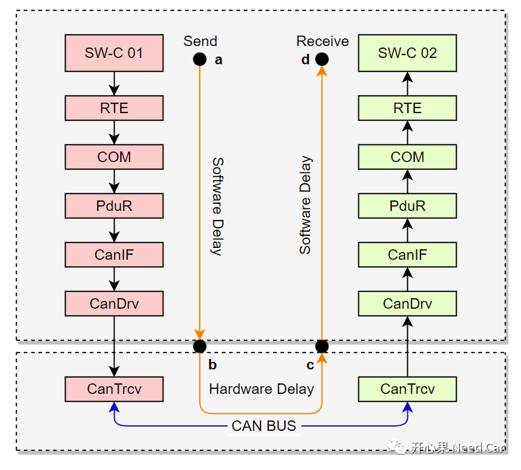
将数据传输分为三个阶段：a->b、b->c、c->d。
a->b：数据发送端，发送数据的软件用时，这里称为软件延时（Software Delay）；
b->c：数据在硬件和物理线路中传输时间，这里称为硬件延时（Hardware Delay）；
c->d：数据接收端，底层驱动接收到数据，送给目标上层的用时，同a->b段，也称为Software Delay。
对于Software Delay，在开发设计中，需要考虑各个模块时序。比如：COM和PduR在同一个Task中，接收数据时，如果PduR模块程序在COM模块程序之后执行，这样会导致COM模块无法在当前周期内获取最新接收到的数据，而需要等到下一个循环。如果PduR模块程序优先COM模块程序执行，PduR即可将当前最新数据传递给COM模块处理，使得COM模块可以最快的拿到最新数据。而对于发送，恰好与接收相反，如果COM想快速将数据发送出去，需要优先PduR执行，这样才能在一个Task中将数据传递给PduR，而不需要下一个Cycle。所以，工程中对周期性更新的数据，应当容忍一个Cycle的偏差。
对于Hardware Delay，这是无法避免的。怎么理解呢？硬件特性固定不变，一个Bit在物理线路上的传输时间一样，与速率无关。
假设，数据流（二进制Bit流）在A、B之间的物理线路上传输，Bit由A点传输到B点，对于500Kbps和2Mbps的通信速率而言，在A、B两点的延时一样，而不同点在于：2us的时间内，B点可以接收4个2 Mbps速率的Bit，而只能接收1个500Kbps速率的Bit，如下所示：
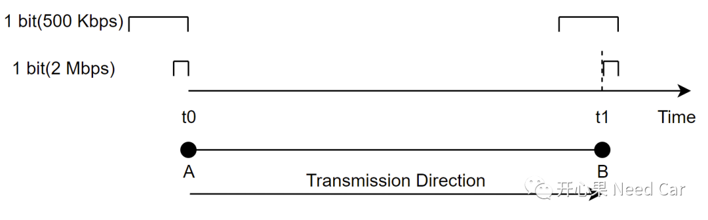
既然通信速率不同，B点接收到的Bit个数会不一样，这就需要关注一个问题：采样点（SP：Sample Point），因为SP采集的值表征着发送端发送的值（0或者1）。
先看一下，数据由Controller如何通过Transceiver发送到总线（BUS）。上层要发送的数据以数字信号的形式在各个软件模块交互，比如：0x18 = 0001 1000b。而数字信号需要转换成模拟信号（电压信号），在物理线路中传输，接收端将接收到的模拟信号再转成数字信号给到对应的上层软件模块。而负责数/模信号转换的物理器件，就是Transceiver。不管是CAN、Flexray总线，还是Ethernet总线，都是一样的原理，只是转换的协议格式不同。CAN总线的Transceiver示意如下：
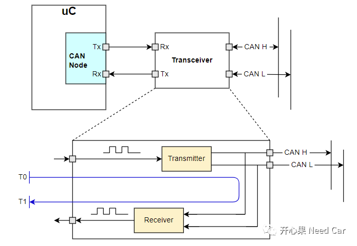
如上可以看出：Transceiver包含Transmitter和Receiver，Transmitter负责将数字信号转成模拟信号，Receiver负责将模拟信号解码成数字信号。节点为了确保所发数据的正确性，需要在发送Bit的同时，监听发送的Bit（接收），如果接收回来的数据与发送的不一致，说明发送错误，此时需要进行错误处理。
而发送和接收，在Transceiver内部需要经历一段时间，即：T1-T0（如上图）。Receiver采样动作在Transmitter发送时就进行，如果总线的通信速率很高时，比如：2Mbps，有可能在T1-T0的时间内，Receiver采样了多次，而实际Transmitter发送的第一个Bit还没有真正的被Receiver收到，所以，需要Receiver延时一段时间再去采样，即延时T1-T0时间再去采样，就可以采集到Transmitter发送的真实数据。
因为T1-T0时间属于物理延时，此时间由实验测得，对应的芯片手册中也会给出建议的延时补偿值，延时时间的测算如下所示：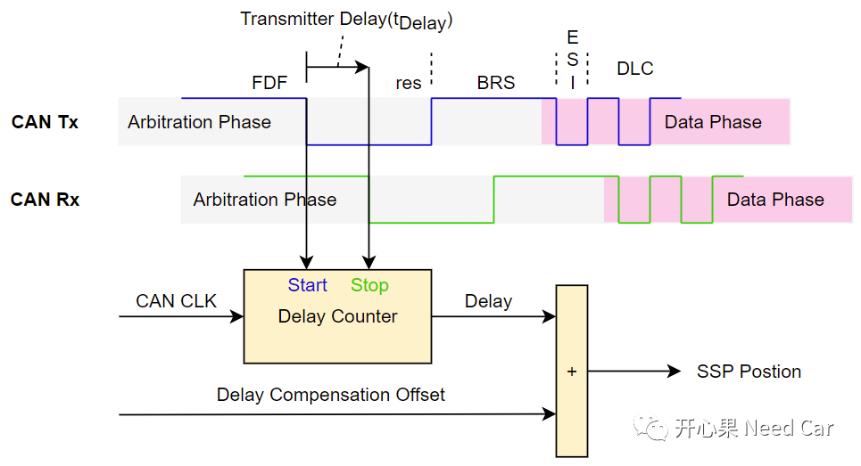
如上图，项目中使用CAN FD时，由于数据段的通信速率可以提升到2Mbps，所以最好按照手册建议值配置延时补偿。使用CAN FD时，可能使用更高的通信速率（2 Mbps），所以，延时补偿需要考虑，避免Receiver采样数据不准（SSP）。对于500 Kbps的通信速率，一个Bit占用时间长，Receiver采样偏差不会太大。采样点的对象是Bit，一个Bit可以化分成四个段：同步段（SS:Synchronization Segment）、传播段（PS:Propagation Segment）、相位缓冲段1（PBS1:Phase Buffer Segment1）、相位缓冲段2（PBS2:Phase Buffer Segment2），如下所示：
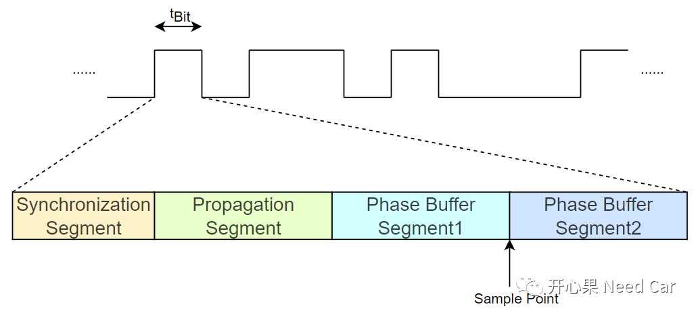
采样点（SP:Sample Point）位于PBS1和PBS2之间，该位置决定着整个Bit到底是1还是0。经典CAN中，高速CAN使用的速率多数是500Kbps，因此一个Bit时间 = 1/500000 = 2us，使用CAN FD时，数据段速率会更高，比如：2Mbps，则一个Bit时间 = 1/2000000 = 0.5us，如下所示：
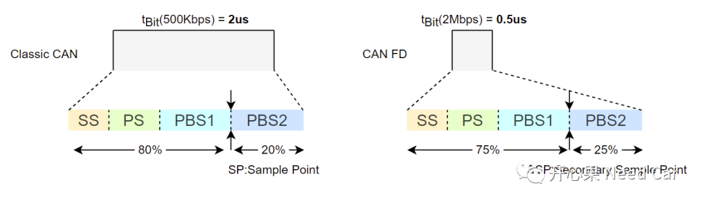
Q1：延时补偿只考虑Transceiver的内部环路延时就可以？
A1：可以。对于发送节点，发送位置在总线A点，对于Transceiver A，接收位置也是在A点，所以可以不考虑总线线束上的延时。对于接收节点，接收位置在总线的B点，Transceiver B需要在B点接收数据，数据由A点到B点确实需要一点时间，这个时间一般是几十纳秒（通过和硬件工程师沟通获悉，如有不同见解可指正）。所以，对于发送节点，延时补偿考虑Transceiver自身环路延时即可，对于接收节点，总线的传输延时，量级不大，可以不考虑。如果线束的延迟时间过大，比如：让其他节点误认为总线处于空闲（超过11个连续隐性位时间，11 * 2us = 22us（通信速率500 Kbps）），则需要考虑。不同节点采样位置示意如下所示：
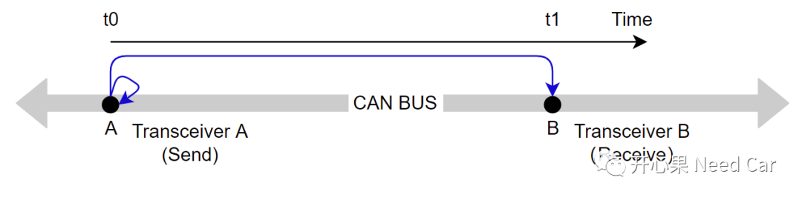
A2：可以忽略。发送节点发送一帧数据以后，ACK应答位由总线上的接收节点响应（由隐性位（1）设置成显性位（0）），这个Bit发送端需要采集到显性位才能确认数据被有效接收，Q1已经提到，物理线束的延时不过几十纳秒，而ACK应答位在标准速率段（500Kbps），一个Bit时间 = 2us = 2000ns，即使总线延时50ns，不过占一个Bit的2.5%，不会影响到Bit的采样。
A3：对于发送节点，发送一个Bit到接收节点接收到该Bit，接收节点相对发送节点需要等待的时间由三段时间决定，时间段1、时间段2、时间段3，如下所示：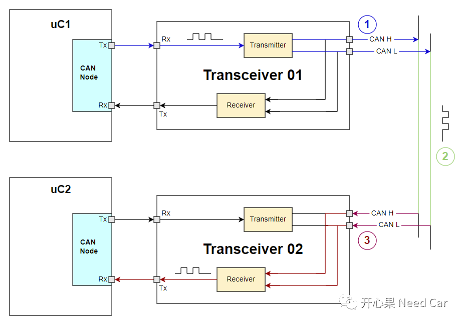
时间段1：发送端，数字信号转成模拟信号用时；
时间段2：模拟信号在物理总线上的传播用时；
时间段3：接收端，模拟信号解码成数字信号用时。
A4：使用CAN FD时，速率切换位置用时介于仲裁段（每个bit用时2us）和数据段（每个bit用时0.5us）之间，BRS（Bit Rate Switch）用时如下所示：
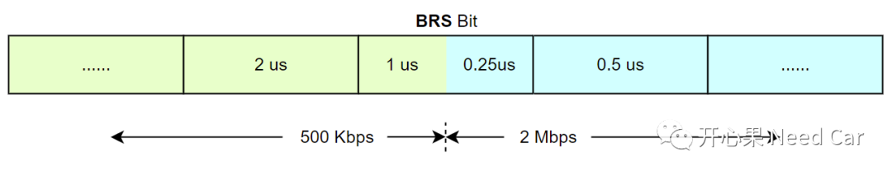
在实际测试中，位速率切换位置的SP测试，有待商榷，按照SP（假设：80%）要求测试还是按照SSP（假设：75%）要求测试呢？
CAN的物理层测试中，SP和SSP的测试实质是干扰SP、SSP位置的电平。- 选定一个固定Bit位，常显性或者隐性Bit（比如：IDE(Identifier Extension)，假设干扰标准数据帧，IDE常显性），仲裁域、ACK应答位不能选，数据域不建议选；
- 当检测到位错误时，此处就是采样位置，比如：在80份额的位置干扰成隐性（实际是显性）。
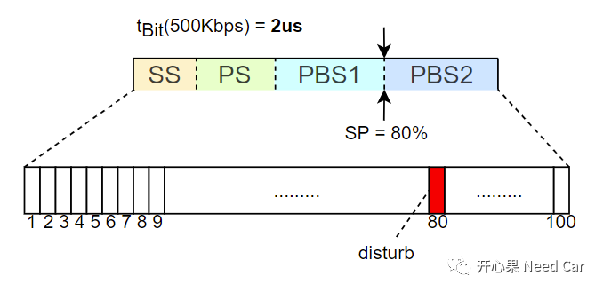
理解了Bit干扰原理，再看看错误帧。总线数据可能在某个时刻被异常的环境工况（比如：极端的雷雨天气）给干扰，导致Bit与实际发送不符。既然外部因素不能左右，那总的考虑容错机制，错误帧应运而生，错误帧何时发送呢？
- 总线上有两个CAN节点，Node A和Node B，通过总线仲裁，Node A赢得了总线的使用权，开始发送数据；
- 在某一时刻，Node A发送显示位（Dominant）,实际接收到隐性位（Recessive）；
- 此时，Node A如果处于主动错误状态（Active Error），会发送主动错误帧，在检测到错误Bit的下一个Bit发送；
- 同时，Node B检测到总线上有6个显性位，违反了位流的发送规则（5个连续相同位，插入一个反向位），如果Node B也处于主动错误状态，也发送主动错误帧；
- Node B的6个显性位会覆盖Node A的隐性位，会导致总线上看到12个显性位，8个隐性位，之后是3个帧间隔隐性位。
如下所示：
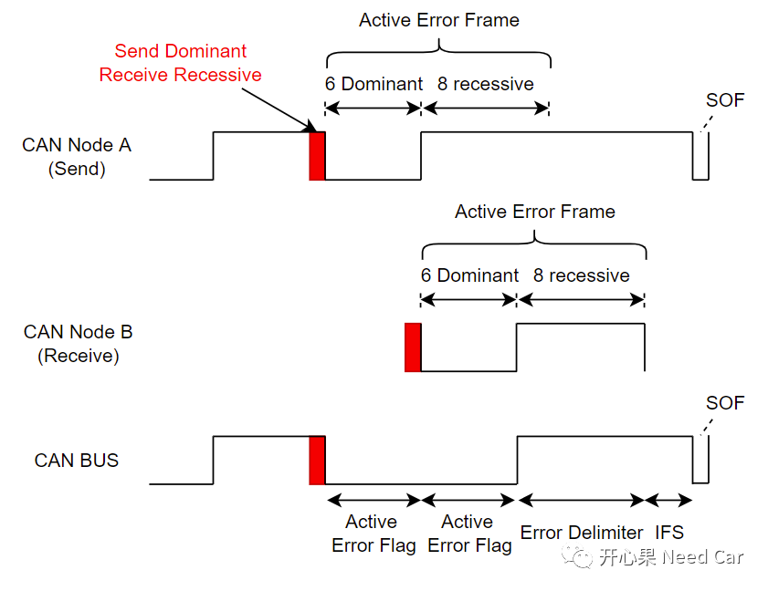
Q1：Busoff测试中，干扰指定的CAN ID（比如：0x100），其他高优先级的报文是否可以发送？
A1：可以。前文聊过，当Tx PDU请求成功以后，表示数据成功放入底层硬件缓存区，之后的发送，由CAN Driver接管，即发送器扫描缓存区中优先级最高的CAN ID参与总线竞争。可以参考前文Autosar通信栈：基础问题知多少。假设0x100优先级最高，干扰报文选择0x100，干扰成功以后（总线出现错误帧，可能位错误（Bit Error），也可能格式错误（Form Error）等），总线暂时不能使能，需要BUS空闲（监听到≥11个隐性位），此期间，如果更高优先级的0x80缓存到底层，等待发送，当总线可以再次使用时，节点会优先将0x80发送到总线，此时就干扰不到0x100报文。所以测试时可以将DUT外发的报文全部干扰。注意：节点发送报文，由于发送错误，节点会尝试重发，之所以能够重发，是因为底层硬件缓存区依然保留着发送数据，对应的空间没有释放，其他发送报文不会占用其空间（覆盖）。当节点再次获取总线使用权，发送报文时，需要再次查找最高优先级的报文进行发送。点击下方关注，一起聊聊Autosar/嵌入式，如果需要，联系作者进群，给你更专业的解答